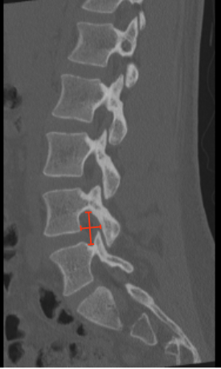

Adapted from: Feger J, Campos A, Murphy A, et al. CT lumbar spine (protocol). Reference article, Radiopaedia.org (Accessed on 03 Jan 2026) https://doi.org/10.53347/rID-90041
1) Description of Measurement
Lumbar foraminal height and width quantify the osseous dimensions of the neural foramen through which the exiting nerve root travels. Reduction in either parameter results in foraminal stenosis, a frequent cause of lumbar radiculopathy, most commonly due to disc height loss, osteophytes, facet hypertrophy, or spondylolisthesis.
CT is particularly useful for evaluating bony contributors to foraminal narrowing.
2) Instructions to Measure
3) Normal vs. Pathologic Ranges
Key point:
Severe stenosis is usually associated with direct nerve root contact or deformity.
4) Important References
Haleem S, Malik M, Guduri V, et al. The Haleem-Botchu classification: a novel CT-based classification for lumbar foraminal stenosis. Eur Spine J. 2021 Apr;30(4):865-869. doi: 10.1007/s00586-020-06656-5.
Huang JW, Zhang YL, Li KY, et al. Deep learning-based lightweight model for automated lumbar foraminal stenosis classification: sagittal CT diagnostic performance compared to clinical subspecialists. Eur Spine J. 2025 Aug 23. doi: 10.1007/s00586-025-09281-2. Epub ahead of print.
Ohba T, Ebata S, Fujita K, et al. Characterization of symptomatic lumbar foraminal stenosis by conventional imaging. Eur Spine J. 2015 Oct;24(10):2269-75. doi: 10.1007/s00586-015-3859-4.
5) Other info....
Foraminal dimensions decrease with disc height collapse; interpretation should include Disc-Height Index.
CT-based foraminal measures should be correlated with MRI for soft-tissue encroachment (disc or ligament).